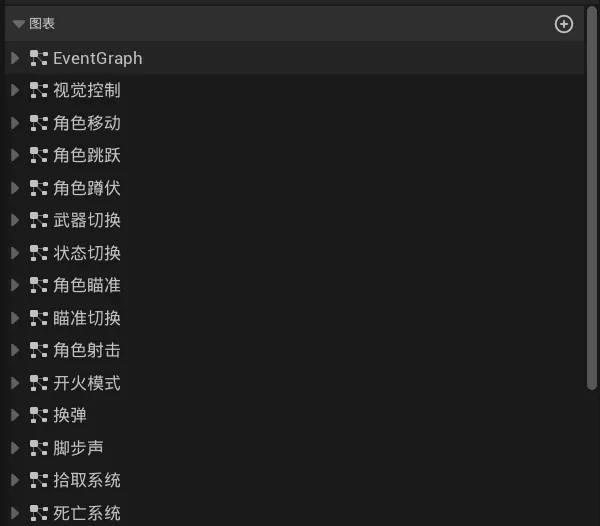
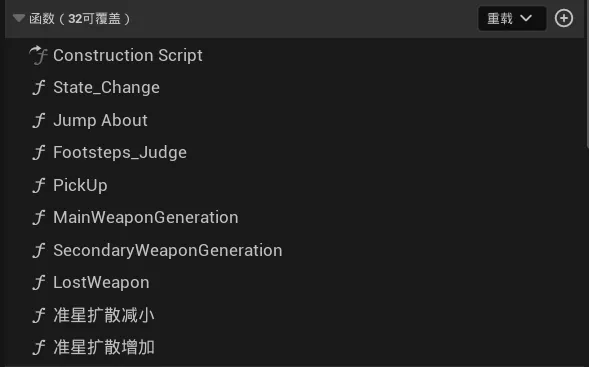
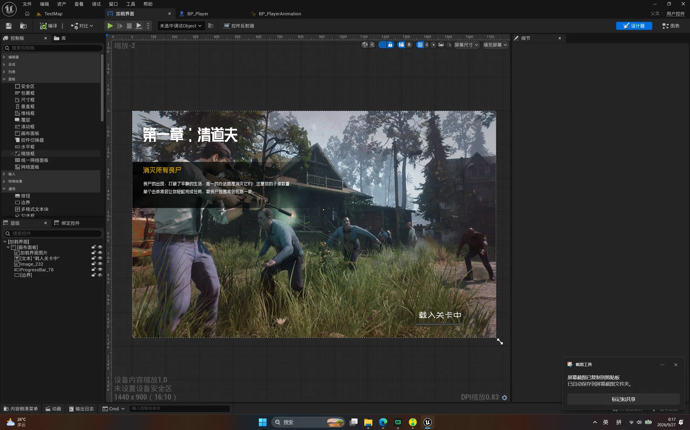
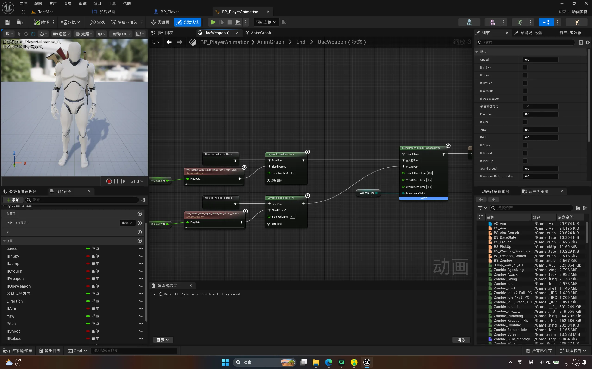
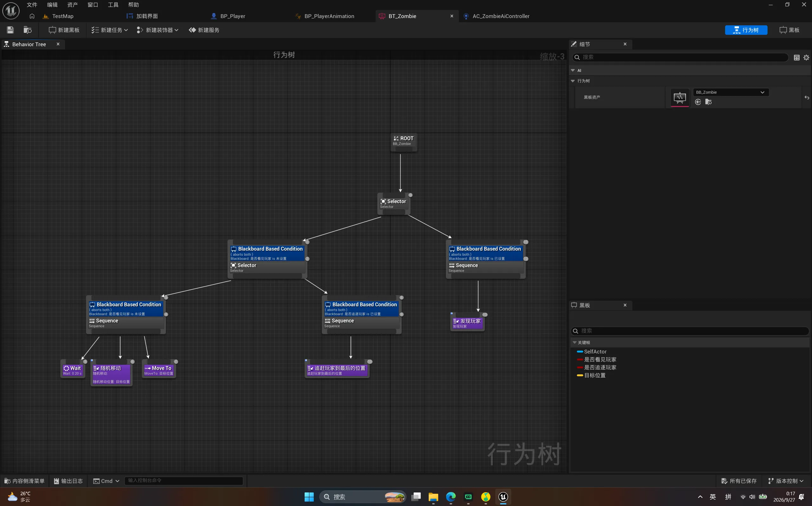
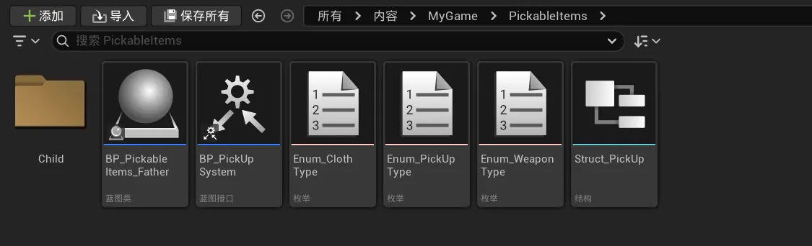
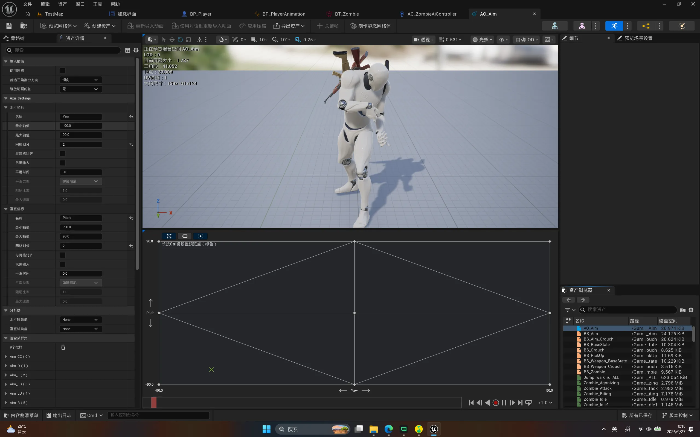
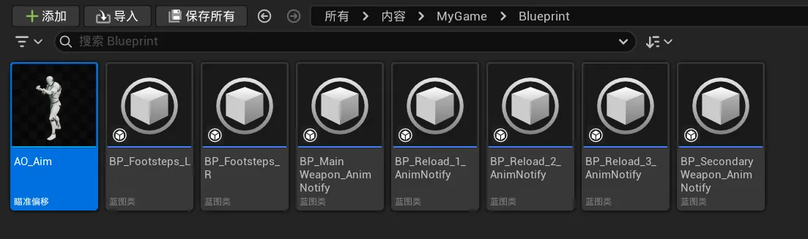

Case 04 / 08
死寂Demo
这是我第一次把项目从零放进引擎里做。前两个作品都是控制台程序，这一版的目标不是玩法—— 玩法是现成的——而是把 UE 的开发流程完整走一遍：角色怎么动、动画怎么混、AI 怎么追人、 UI 怎么接数据，每一项都是新的。
概览与技术栈
内容本身很普通：第三人称视角，主角拿着枪在雾里的废弃城镇和公路上走，看见的丧尸会追过来， 把这一章要求的数量清完就算过关。玩法是照着现成的类型做的，我练的是它背后的东西。
用引擎和用代码写游戏最大的区别是「话变多了」。同一个功能，以前写几行就完了，现在要在好几个 编辑器之间来回切：蓝图管逻辑，动画蓝图管姿势，行为树管 AI，UMG 管界面，还要达成蓝图通信，还得用动画通知 在动画的某一帧上插脚本。刚开始最不适应的是UE庞大的系统，不知道实现某个功能会用到什么蓝图节点，细节面板的对于设置有什么用，这点需要跟着教程一点点的熟悉。
具体到实现：角色这边把移动、跳跃、蹲伏、瞄准、开火、换弹、脚步、拾取、死亡都拆成了独立的 子图表，再用状态切换把它们串起来，不然所有节点堆在一张 EventGraph 里根本找不到线头。 动画这边用混合空间把「站着还是蹲着」和「朝哪个方向看」两组姿势混出来，转身和瞄准才不会硬切。 AI 用行为树加黑板，只在发现玩家时才追，没发现就原地等一会儿再随机挪一段。
做完最直接的收获是知道了「一个完整项目要经过哪些环节」，而不是只知道某个功能怎么写。 也第一次体会到可视化脚本的好处和坏处：改数值、看连线非常直观，但逻辑一多，图表就会连成 一团毛线，能不能看懂全靠命名和拆分够不够自律——这一点和控制台项目里「把函数写短」其实是 同一件事。
技术栈
- 引擎
- Unreal Engine 5.4
- 逻辑
- 蓝图，角色的 EventGraph 按功能拆成 14 张子图表
- 动画
- 动画蓝图 + 混合空间 + 瞄准偏移，站姿与瞄准方向分开混合
- AI
- 行为树 + 黑板，按「是否发现玩家」在巡逻与追击之间切换
- 界面
- UMG，负责关卡加载界面与任务提示
- 系统设计
- 蓝图接口 + 枚举 + 结构体，统一拾取物品的父类与类型
- 素材
- 以现成资产为主，这一版的重点在流程不在美术
截图与演示
这个项目的实机画面只有一张，另加一段录屏。视频默认不加载也不自动播放，点了左下角的播放按钮 才会开始下载，若视频加载不出来，请稍等。

技术文档
这个项目没有代码可以贴——逻辑全做在蓝图里。下面八张是各模块在编辑器里的样子， 每一张配一句当时为什么这么做。
回头看，这个项目最值得记下来的不是某个节点的用法，而是「一个功能应该拆到多细」这件事。 拆得太粗，一张图里全是连线；拆得太细，又到处是只调用一次的小函数。 我最后是按「功能实现」定的标准：确定好每一个图表要实现的功能，互不污染。








导航链接
这个项目目前只在我自己电脑上跑，没有公开的代码仓库，也还没有打包发布，所以这里暂时 没有可以点的链接。想看看的话可以直接找我要工程文件。
- 代码仓库
- 暂无公开仓库
- 打包发布
- 暂未发布